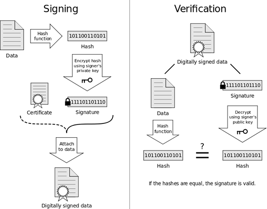

Introducción a la Seguridad Informática
Clase: 3
Instituto Educación IT
Sobre el curso
Módulo 3/4: Introducción a la Seguridad Informática
Temas:
Criptografía · Algoritmos de hashing · Ataques de fuerza bruta · Técnicas de Salting
Entre otros ..
Criptografía: un resumen
Hasta ahora estudiamos:
- Conceptos generales de Seguridad Informática
- La historia de la criptografía
- Criptografía Simétrica
- Ventajas y desventajas de la criptografía Simétrica
- Ataques a los algortimos y a la clave
- Criptografía asimétrica
- Criptografía híbrida
- Esteganografía
- One Time Pad
Algoritmos de Hashing:
¿Qué son?
Un algoritmo o función hash es un método para generar claves que representen de manera biunívoca (no reversible) a un conjunto de datos o documento. Es una operación matemática que se realiza sobre este conjunto de datos de cualquier longitud, y su salida es una huella digital, de tamaño fijo e independiente de la dimensión de la cadena o documento original.
Un poco de historia sobre el hashing
Algoritmos de Hashing:
Un esquema gráfico

Destaquemos dos puntos importantes del ejemplo
- Sin importar la longitud de la cadena de entrada el hash resultante que produce la función tiene el mismo largo.
- El más minimo cambio en la cadena produce un hash completamente distinto
Usos del hashing:
Autenticación en BD 1/3
En los sistemas informáticos, el almacenamiento seguro de la base de datos de usuarios y contraseñas suele ser un gran desafío. Imaginemos que debemos contar con una pequeña tabla para luego almacenarla, que tenga solamente dos campos "user" y "password":
| User | Password |
|---|---|
| Admin | test_System2 |
| David | Rosario2014 |
| Ana | 12345678 |
| José | jose1967 |
El problema de almacenar esta base es obvio ¿no?
¡Nuestros passwords se guardan en texto plano!
Usos del hashing:
Autenticación en BD 2/3
Nos desviamos un instante del hashing, apliquemos a nuestra base lo que aprendimos de cifrado simétrico.
La misma base, pero con cfirado AES-128 se vería así:
User
Password
Admin
KONLtkftmamdYWo93uT+eQ==
David
mApKEsk9GgFgbhgwNW9LVg==
Ana
z3IS/w9OvkTQCwTzPZb+Zg==
José
mpasjNrLJJbqX+KUupTEbg==
| User | Password |
|---|---|
| Admin | KONLtkftmamdYWo93uT+eQ== |
| David | mApKEsk9GgFgbhgwNW9LVg== |
| Ana | z3IS/w9OvkTQCwTzPZb+Zg== |
| José | mpasjNrLJJbqX+KUupTEbg== |
Parece bastante seguro ¿no?
Pero este esquema también tiene un problema ¿cual es?
Conociendo el algoritmo de cifrado utilizado, los administradores del sistema por ejemplo, podrían conocer los passwords de todas las personas en esa base de datos.
Cifrado con: aesencryption.net
Usos del hashing:
Autenticación en BD 3/3
Ahora a nuestra base apliquemos un algoritmo de hashing conocido y probado: SHA-256. La base debería verse así:
User
Password
Admin
84843e3117b89c63124c37e8995b6bdf97cc9bd34e90d77c9e99a8ee6cac68b5
David
e34e432fc7bafc3790d46162826ff3fe934dea90e1f5e48b9c0bae17339146ed
Ana
ef797c8118f02dfb649607dd5d3f8c7623048c9c063d532cc95c5ed7a898a64f
José
7ec4dd185965fed23abde1d752479d88f6f8b91ec75a417ed6e92ff1e749730e
Este esquema es casi perfecto. ¿por qué?
Hashing: xorbin.com/tools/sha256-hash-calculator
| User | Password |
|---|---|
| Admin | 84843e3117b89c63124c37e8995b6bdf97cc9bd34e90d77c9e99a8ee6cac68b5 |
| David | e34e432fc7bafc3790d46162826ff3fe934dea90e1f5e48b9c0bae17339146ed |
| Ana | ef797c8118f02dfb649607dd5d3f8c7623048c9c063d532cc95c5ed7a898a64f |
| José | 7ec4dd185965fed23abde1d752479d88f6f8b91ec75a417ed6e92ff1e749730e |
¿por qué?
Usos del hashing:
Asegurar la integridad de la información
Otro uso muy importante que tiene el hashing es el de garantizar la integridad de los datos, esto es algo que se ve muchas veces en sitios web que proporcionan descargas de archivos grandes dando junto a estos la salida del hashing aplicada al archivo y la función usada.
Veamos un ejemplo
#Ejemplo de MD5 checksum en linux de index.html (esta presentación)
> md5sum index.html
> ce3d75e8bebe0e291c859e1faea6a027 index.html
El hashing del documento ce3d75e8bebe0e291c859e1faea6a027 representa la prueba de integridad del archivo ya que de modificar un solo bit de este, la función hashing (MD5), devolverá una cadena completamente distinta.
Usos del hashing: Firma Digital
Podemos utilizar técnicas de hashing que junto a métodos de cifrado nos permiten firmar digitalmente y probar la integridad de un documento. El esquema es el siguiente:
Nos tomamos un minuto para entender este proceso.
Otros conceptos sobre hashing:
Colisiones
Los algoritmos de hashing pueden producir colisiones
¿Qué es esto?
En informática, una colisión de hash es una situación que se produce cuando dos entradas distintas a una función de hash producen la misma salida. Es matemáticamente imposible que una función de hash carezca de colisiones, ya que el número potencial de posibles entradas es mayor que el número de salidas que puede producir un hash. Sin embargo, las colisiones se producen más frecuentemente en los malos algoritmos.
Ataques de Fuerza bruta / y dps poner Rainbow Tables
¿Qué es?
La criptografía asimétrica utiliza dos claves (pública y privada) generadas por un algoritmo asimétrico para proteger las claves y la distribución de las mismas. Y una clave secreta es generada a través de un algoritmo simétrico y utilizado para cifrar grandes cantidades de datos. Así, obtenemos un sistema híbrido, que utiliza ambas tecnologías.
Veamos un ejemplo
Ejemplo de criptografía híbrida
Juan quiere enviarle un mensaje a Pablo y quiere que solamente él pueda leerlo.
Juan va a cifrar el mensaje con la clave secreta (simétrica). Después, Juan va a cifrar la clave simétrica utilizando la clave pública de Pablo.
Pablo va a recibir una clave cifrada que solamente él puede descifrar (utilizando su clave privada).
Una vez obtenida la clave, va a utilizarla para descifrar los datos del mensaje con el algoritmo simétrico.
Gracias a esto, obtenemos la velocidad de los algoritmos simétricos, y las ventajas de los algoritmos asimétricos
Salting y demás yerbas
¿qué es?
Fue inventado por Gilbert Vernam en 1917 y a veces es llamado 'Cifrado de Vernam'. Se dice que este tipo de cifrado es 'perfecto', porque es considerado irrompible (si es implementado correctamente).
Utiliza una tabla de bits aleatorios y el proceso de cifrado utiliza una función matemática binaria llamada 'XOR', una operación que es aplicada a cada par de bits. Cuando se combinan los bits, si los dos valores son iguales, el resultado es '0' (cero). Si los dos bits son diferentes, el resultado será '1' (uno).
Veamos un ejemplo
Ejemplo de One Time Pad
Mensaje: 1001010111
Clave: 0011101010
-------------------
Cifrado: 1010111101
One Time Pad
Se dice que este cifrado es irrompible si:
- La tabla es utilizada sólo una vez. Si no es así, esto podría introducir patrones que podrían permitir a un atacante descifrar la tabla
- La tabla es igual de larga que el mensaje. De no ser así, la tabla debería ser reutilizada para poder cifrar todo el mensaje
- La tabla debe ser distribuida de forma segura. El compromiso de la tabla haría que todo el sistema de seguridad se viniera abajo
- La tabla debe estar compuesta de valores verdaderamente aleatorios. Lo cual, parece una tarea sencilla pero, hoy en día, las computadoras no suelen tener la capacidad de generar valores del todo aleatorios (entropía)
Esteganografía:
¿Qué es?
Es un método que permite ocultar datos dentro de otros datos. Se supone que sólo el emisor y el receptor podrán ver el mensaje, que estará oculto en, por ejemplo, un archivo de imagen o sonido. El mensaje no está cifrado, solamente oculto, por lo tanto, no es exáctamente un método de cifrado, si no más bien de ocultación de datos.
Los mensajes cifrados podrían llamar la atención, dando por sentado que, si alguien se tomó el trabajo de cifrarlos, deben ser importantes. La esteganografía se utiliza para ocultar los mensajes, con el fin de que nadie trate de descifrarlos.
Esteganografía
Un caso práctico
Por ejemplo, podríamos utilizar un archivo de imagen, y ajustar el color de los píxeles múltiplos de 100, para que se correspondan a una letra del alfabeto. Dicho cambio no va a ser perceptible por el ojo humano, pero sí por una computadora. Los componentes utilizados en la esteganografía son:
- Portador: El archivo que contiene la información oculta
- Medio: El medio en que se oculta la información
- Carga: La información que se oculta y se transmite